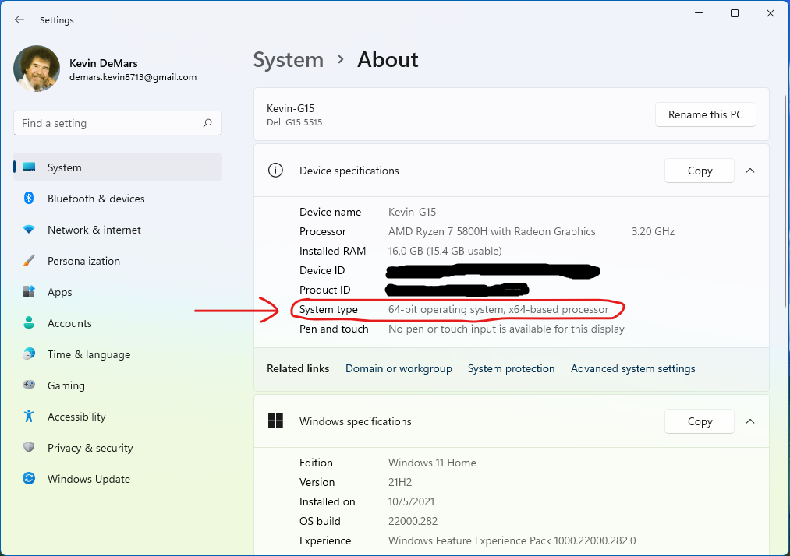
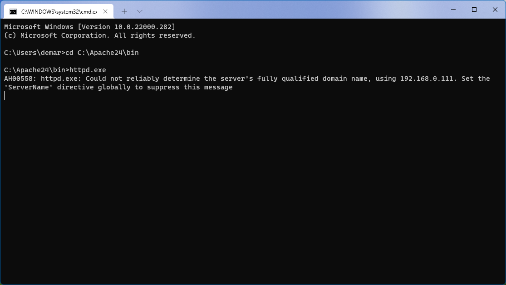

Installation
Apache by itself does not provide an installable version of the websever (a.k.a. "binaries" or "distribution"). Apache lists several third-party distributions:
For this guide, I chose the distribution from Apache Lounge, because it is simple and includes Apache and nothing else.
Prerequisites
Determine whether your computer has a 64-bit or 32-bit architecture by following this procedure.
Most modern computers are 64-bit computers.

Note that some programs will call the 32-bit version "x86".
- Install "Visual C++ Redistributable for Visual Studio 2015-2019".
The 64-bit version is available here.
The 32-bit version is available here.
Installation
"Bare Essentials" Server
- Go to the Apache Lounge download page
- Download the current version, which as of Nov 2021 is either "httpd-2.4.51-win64-VS16.zip" or "httpd-2.4.51-win32-VS16.zip". If your computer is 64-bit, download the one with "win64"; otherwise, download the one with "win32".
- Extract the ".zip" file by right-clicking and choosing "Extract All...".
- The resulting folder will contain a folder called "Apache24". Move it directly to the top level of the C drive, so that the path to the folder is "C:\Apache24".
It is possible to put it somewhere else, but it will take extra configuration.
- Test that the server works:
- Open the Command Prompt as Administrator:
- Press the Windows key and search for "cmd.exe".
- Right-click it, and select Run as Administrator.
- Navigate to the folder containing the server by entering "cd C:\Apache24\bin". (cd stands for "change directory".)
- Run the server by entering "httpd.exe". You may see a warning like in the picture below; ignore it for now.

- While leaving the Command Prompt open, open your web browser.
- In the address bar, enter "http://localhost". You should see a mostly-empty page with the words "It works!"
- On the Command Prompt, shut down the server by pressing Ctrl-C.
Install as Windows service
This step makes the server run as a Windows service, so you don't have to use the command prompt to start up the server.
- As above, open the command prompt and navigate to "C:\Apache24\bin".
- Enter this command:
httpd.exe -k install -n "Apache HTTP Server"
This installs the service and gives it a name.
- Open your Services application (press Windows; search for "Services").
- There should be an entry with the same name as above. You can start and stop the server through the right-click menu.
You can also set it to automatically start when Windows starts ("Automatic") or not ("Manual").
{kind=link}
{kind=link}